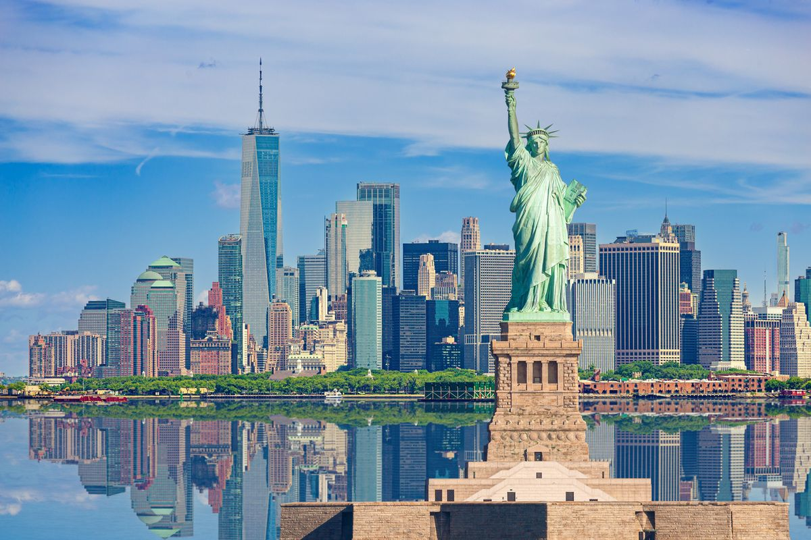

Amerika Serikat (AS) adalah sebuah negara yang terletak di benua Amerika Utara, yang terdiri dari 50 negara bagian, satu distrik federal (Washington D.C.), serta beberapa wilayah teritorial. Negara ini adalah salah satu kekuatan besar di dunia dengan ekonomi terbesar dan pengaruh politik, militer, serta budaya yang signifikan di tingkat global.
Amerika Serikat berbatasan dengan Kanada di utara, Meksiko di selatan, Samudra Atlantik di timur, dan Samudra Pasifik di barat. Ibu kotanya adalah Washington, D.C., sementara kota-kota besar lainnya termasuk New York, Los Angeles, Chicago, dan Houston. Sistem pemerintahan AS adalah republik federal, dengan presiden sebagai kepala negara dan kepala pemerintahan.
Amerika Serikat dikenal karena keragaman budayanya, kekuatan ekonomi, dan kontribusinya dalam teknologi, ilmiah, serta industri hiburan.

Sistem Pemerintahan
Amerika Serikat merupakan sebuah negara serikat/federal berbentuk republik beribukota di Washington D.C. yang mempunyai 50 negara bagian. Sedangkan sistem pemerintahan yang dianut adalah Sistem Pemerintahan Presidensial. Presiden Amerika adalah kepala negara juga sekaligus sebagai kepala pemerintahan.
Terdapat pemisahan kekuasaan yang jelas antara legislatif, eksekutif, dan yudikatif yang dinamakan “Separation of Power Teory” yang berasal dari ajaran Trias Politika (Montesquieu) yang membedakan kekuasaan dalam suatu negara dipisahkan menjadi 3 cabang kekuasaan :
Eksekutif : kekuasaan yang melaksanakan Undang-Undang
Kekuasaan eksekutif dipengang oleh Presiden yg dipilih oleh masyrakyat. Presiden menduduki jabatan sebagai kepala pemerintahan dan kepala negara. Presiden dan wapres dipilih melalui pemilihan umum, jadi tidak memberikan pertanggungjawaban kepada Kongres namun jika presiden dinyatakan melakukan pelanggran berat(high crimmines and misdemeasnors) & kejahatan yaitu kegiatan melawan negara atau hukum seperti : membunuh, korupsi besar, penghianatan, dll maka presiden dapat dipecat/dimakzulkan (impeachment).
Legislatief : kekuasaan yang menyusun/membuat Undang-Undang
Kekuasaan legislatif berada pada parlemen atau disebut Konggres (congress). Konggres terdiri atas dua kamar, yakni Senat & House of Representatif. Anggota Senat (perwakilan dari negara bagian) perwakilan tiap tiap negara bagian masing-masing dua orang jadi jumlahnya ada 100 senator. Sedangkan House of Representatif (Dewan Perwakilan Rakyat) ditentukan berdasarkan jumlah penduduk.
Yudikatif : kekuasaan yang mengawasi pelaksanaan UU dan memberikan sanksi bagi pelanggar UU
, Ini ini dimaksudkan agar terwujudnya check and balance sehingga tidak ada kekuasaan yang terlalu dominan. Kekuasaan yudikatif ada di tangan Mahkamah Agung (Supreme of Court) yang bebas dan merdeka dan tidak dapat dipengaruhi oleh kekuasaan yang lainnya.
Ekonomi Amerika Serikat
Amerika Serikat menerapkan sistem ekonomi kapitalis campuran yang didukung oleh ketersediaan sumber daya alam yang melimpah, infrastruktur yang dikembangkan dengan baik, dan produktivitas yang tinggi. Menurut International Monetary Fund (IMF), PDB AS adalah $15,1 triliun, atau sekitar 22% dari produk dunia bruto, dan dengan nilai pertukaran pasar hampir 19% dari total produk dunia bruto menurut keseimbangan kemampuan berbelanja (KKB). Jika dihitung sebagai negara tunggal, angka ini merupakan yang terbesar di dunia; PDB nasional AS hanya 5% lebih kecil dari total PDB Uni Eropa yang jumlah populasinya 62% lebih banyak. Di antara negara-negara lainnya, Amerika Serikat menempati peringkat ke-9 di dunia menurut PDB nominal per kapita dan peringkat 6 menurut PDB (KKB) per kapita. Dolar Amerika Serikat adalah cadangan mata uang utama di dunia
Amerika Serikat adalah importir barang terbesar pertama dan eksportir terbesar kedua di dunia, meskipun ekspor per kapita nya masih agak rendah. Pada tahun 2010, total defisit perdagangan Amerika Serikat adalah $635 biliun. Kanada, RRC, Meksiko, Jepang, dan Jerman adalah mitra perdagangan utama AS. Pada 2010, minyak adalah komoditas impor terbesar, sedangkan alat transportasi adalah komoditas ekspor terbesar Amerika Serikat. RRC dan Jepang adalah dua negara asing terbesar pemegang utang publik AS.
Sektor manufaktur didominasi oleh produk-produk kimia. AS merupakan produsen minyak terbesar ketiga di dunia, dan juga importir minyak terbesar. Negara ini juga menjadi produsen terbesar energi nuklir dan listrik, begitu juga dengan gas alam likuid, sulfur, fosfat, dan garam. Meskipun sektor pertanian hanya menyumbangkan kurang dari 1% bagi total PDB, AS merupakan produsen terbesar tanaman jagung dan kedelai. Bursa Saham New York adalah bursa saham terbesar di dunia menurut jumlah dagangan dalam dolar. Coca-Cola dan McDonald's adalah dua merek dagang asal AS yang paling terkenal di dunia.
Budaya
Perkembangan Budaya Amerika Serikat — sejarah, hari-hari libur, olahraga, agama, kuliner, musik, tari, dan seni rupa — banyak dipengaruhi oleh budaya eropa, khususnya inggris, serta budaya indian sebagai masyarakat asli.
Negara Amerika Serikat pada awal-awal berdirinya memberlakukan kebijakan buka pintu bagi para imigran yang datang dari seluruh dunia. Para imigran yang datang ke Amerika, dan kemudian memilih untuk menetap dan menjadi warga Amerika, oleh pemerintah diminta untuk tidak meninggalkan kebudayaannya dan tetap mempraktikannya selama tinggal di Amerika. Hal tersebut membuat budaya Amerika Serikat menjadi multikultural. Berbagai macam budaya dunia bercampur, tetapi budaya country dan koboi umumnya menjadi salah satu lambang dan ciri khas yang terkenal tentang Amerika.
Masyarakat Amerika Serikat mengakui mereka tidak memiliki budaya khusus turun termurun, melainkan menganggap bahwa budaya mereka adalah budaya untuk "berusaha menjadi yang terbaik". Karena tidak ada faktor kasta, agama, dan budaya yang menghalangi hal ini, masyarakat di negara tersebut mempercayai, seseorang yang berusaha untuk menjadi yang terbaik, akan dapat menjadi yang terbaik.
Budaya Amerika Serikat telah berkembang ke seluruh dunia dalam berbagai bentuk adaptasi dan telah memengaruhi seluruh dunia, khususnya dunia Barat. Musik di Amerika Serikat banyak didengarkan di seluruh dunia, dan tayangan film beserta televisi Amerika Serikat dapat dilihat di manapun. Kini sebagian besar kota di sana memiliki musik klasik dan rakyat; pusat penelitian dan museum, pertunjukan tari, musik dan drama; proyek seni terbuka dan arsitektur penting.
Amerika Serikat juga menjadi pusat pendidikan yang berkualitas tinggi. Negara tersebut memiliki lebih dari 1.500 universitas, kolese, dan berbagai institusi pendidikan, beberapa di antaranya terkenal di seluruh dunia. Di negara tersebut banyak terdapat tempat-tempat berjudi seperti di kota Las Vegas yang dikenal sebagai Sin City (Kota Penuh Dosa)
Populasi
Amerika Serikat memperkirakan bahwa penduduk negara itu sekarang berjumlah 315.585.000 jiwa, termasuk 11,2 juta warga negara asing yang diperkirakan menetap secara ilegal. Populasi AS membengkak hampir empat kali lipat di sepanjang abad ke-20, dari sekitar 76 juta jiwa pada tahun 1900. Jumlah ini menjadikan AS sebagai negara dengan jumlah populasi terbanyak di dunia setelah RRC dan India. Di antara ketiga negara ini, AS adalah satu-satunya negara industri yang peningkatan besar-besaran populasinya dapat diproyeksikan.
Dengan angka kelahiran 13 per 1.000 jiwa, atau 35% di bawah rata-rata dunia, pertumbuhan populasi AS meningkat positif sebesar 0,9%, lebih tinggi jika dibandingkan dengan kebanyakan negara-negara maju lainnya. Pada tahun fiskal 2011, lebih dari satu juta imigran (kebanyakan berasal dari reunifikasi keluarga) diberikan status sebagai warga negara. Meksiko menjadi negara dengan imigran terbanyak yang memasuki AS selama lebih dari dua dekade; sejak 1998, RRC, India, dan Filipina juga menempati peringkat teratas sebagai negara pemasok imigran terbanyak ke Amerika Serikat setiap tahunnya
Sejarah
Sejarah Amerika Serikat
Amerika Serikat terletak di tengah-tengah benua Amerika Utara, dibatasi oleh Kanada di sebelah utara dan Meksiko di sebelah selatan. Negara Amerika Serikat terbentang dari Samudra Atlantik di pesisir timur hingga Samudra Pasifik di pesisir barat, termasuk kepulauan Hawaii di lautan Pasifik, negara bagian Alaska di ujung utara benua Amerika, dan beberapa teritori lainnya.
Penetap pertama wilayah yang kini menjadi Amerika Serikat berasal dari Asia sekitar 15.000 tahun yang lalu. Mereka menyeberangi jembatan darat Bering ke Alaska. Selanjutnya, penduduk asli Amerika bermukim di wilayah tersebut selama ribuan tahun sebelum kedatangan para kolonis Eropa. Pada tahun 1492, Christopher Columbus berhasil mencapai Amerika. Orang-orang Inggris lalu bermukim di Jamestown, Virginia pada tahun 1607. Permukiman ini dianggap sebagai permukiman pertama di Amerika Serikat. Selanjutnya, Amerika Serikat terus didatangi oleh orang-orang Inggris. Orang Prancis, Spanyol, dan Belanda juga bermukim di sebagian Amerika Serikat. Pada tahun 1770-an, tiga belas koloni Inggris meliputi dua setengah juta penduduk. Koloni-koloni ini tumbuh dan berkembang dengan pesat, serta mengembangkan sistem politik dan hukum sendiri. Meskipun demikian, perkembangan koloni-koloni Inggris berakhir tidak baik bagi penduduk asli Amerika, karena banyak dari mereka yang tewas akibat penyakit, dan mereka kehilangan negeri mereka.
Dengan dukungan militer dan keuangan berskala besar dari Prancis serta kepemimpinan Jenderal George Washington, Pasukan Patriot memenangkan Perang Revolusi dan perdamaian disepakati pada tahun 1783. Selama dan setelah perang, 13 negara bersatu di bawah pemerintah federal yang ditetapkan melalui Pasal-Pasal Konfederasi. Ketika dokumen ini tak lagi bekerja dengan baik, Konstitusi baru ditetapkan pada tahun 1789 dan hingga ini menjadi dasar bagi pemerintah federal Amerika Serikat, dan kemudian hari meliputi pula Undang-Undang HAM. Dengan Washington sebagai presiden pertama dan Alexander Hamilton sebagai kepala penasihat keuangannya, pemerintahan nasional yang kuat pun dibentuk. Pada Sistem Partai Pertama, dua partai politik nasional berkembang mendukung atau menolak kebijakan Hamilton. Ketika Thomas Jefferson menjadi presiden, ia membeli Wilayah Louisiana dari Prancis, menggandakan luas wilayah Amerika. Perang kedua dan terakhir melawan Inggris berlangsung pada tahun 1812. Hasil utama dari perang tersebut adalah berakhirnya dukungan Eropa bagi serangan suku Indian terhadap para pemukim barat.
Di bawah dukungan demokrasi Jefferson dan demokrasi Jackson, Amerika Serikat meluas melalui pembelian Louisiana hingga sejauh California dan Oregon, serta pencarian lahan murah untuk para petani dan pemilik budak Yeoman yang mempromosikan demokrasi dan perluasan, yang harus dibayar dengan kekerasan dan kebencian terhadap kebudayaan Eropa. Perluasan ini, di bawah Manifest Destiny, adalah penolakan terhadap saran Partai Whig yang ingin meningkatkan dan memodernisasi ekonomi dan masyarakat alih-alih memperluas wilayah. Perbudakan dihapuskan di semua negara bagian di Utara (sebelah utara garis Mason-Dixon yang memisahkan Pennsylvania dan Maryland) pada tahun 1804, namun tetap berlangsung di negara-negara bagian di Selatan karena tingginya permintaan kapas dari Eropa.
Setelah tahun 1820, serangkaian kompromi menunda pertikaian mengenai masalah perbudakan. Pada pertengahan tahun 1850-an, kekuatan Republik merebut kendali politik atas Utara dan berjanji untuk menghentikan perluasan perbudakan, yang mengindikasikan penghapusan perbudakan. Pemilihan presiden pada tahun 1860 yang dimenangkan oleh Abraham Lincoln dari partai Republik membuat sebelas negara budak melepaskan diri dan mendirikan Konfederasi pada tahun 1861. Setelah empat tahun pertumpahan darah, Uni, di bawah Presiden Lincoln dan Ulysses S. Grant sebagai jendera panglima mengalahkan Selatan dengan Robert E. Lee sebagai jenderalnya yang paling terkenal. Akhirnya perbudakan dihapuskan dan Selatan menjadi miskin. Pada era Rekontsruksi (1863–77), Amerika Serikat mengakhiri perbudakan dan memperluas hak hukum dan hak suara untuk mantan budak (Orang Afrika Amerika yang pernah menjadi budak). Pemerintah nasional menjadi lebih kuat, dan karena Amendemen Keempat Belas, pemerintah kini memiliki tugas nyata untuk melindungi hak individu. Rekonstruksi berakhir pada 1877 dan sejak tahun 1890-an hingga 1960-an sistem Jim Crow (segregasi) membuat orang kulit hitam berada dalam inferioritas politik, sosial, dan ekonomi. Seluruh Selatan mengalami kemiskinan hingga paruh kedua abad ke-20, ketika Utara dan Barat berkembang dan makmur dengan cepat.
Amerika Serikat menjadi kekuatan industri yang unggul pada awal abad ke-20 akibat ledakan jumlah wirausahawan di Utara dan kedatangan jutaan pekerja imigran serta petani dari Eropa. Jaringan rel kereta nasional diselesaikan, dan pertambangan serta pabrik berskala besar mengindustrialisasi kawasan Timur Laut dan Barat Tengah. Ketidakpuasan kelas menengah atas korupsi, inefisiensi, dan politik tradisional memicu gerakan Progresif sejak tahun 1890-an hingga 1920-an, yang mendorong terjadinya reformasi dan memungkinkan hak suara perempuan serta pelarangan alkohol (yang dicabut pada 1933). Meskipun pada awalnya netral dalam Perang Dunia I, Amerika Serikat menyatakan perang terhadap Jerman pada tahun 1917, dan mendanai Sekutu hingga meraih kemenangan setahun kemudian. Setelah dekade kemakmuran pada tahun 1920-an, runtuhnya Wall Street 1929 menandani dimulainya Depresi Besar yang mendunia selama sedasawarsa. Franklin D. Roosevelt yang Demokrat menjadi presiden dan menerapkan program barunya, New Deal, untuk bantuan, pemulihan, dan reformasi, yang mendefinisikan liberalisme Amerika modern. Setelah serangan Jepang ke Pearl Harbor pada 7 Desember 1941, Amerika Serikat memasuki Perang Dunia II bersama Sekutu dan membantu mengalahkan Jerman Nazi di Eropa dan mengalahkan Jepang di Timur Jauh.
Setelah Perang Dunia II, Amerika Serikat dan Uni Soviet muncul sebagai negara adidaya yang saling bersaing dan memulai Perang Dingin. Kedua negara ini saling bertikai secara tak langsung dalam persaingan senjata dan perlombaan angkasa. Kebijakan luar negeri Amerika Serikat selama Perang Dingin dipusatkan pada pembendungan Komunisme, dan negara ini ikut serta dalam perang di Korea dan Vietnam untuk mencapai tujuan ini. Liberalisme memperoleh banyak kemenangan pada masa New Deal dan juga pada pertengahan 1960-an, khususnya dalam kesuksesan gerakan hak sipil, namun konservatisme kembali berkembang pada tahun 1980-an di bawah Ronald Reagan. Perang Dingin berakhir setelah bubarnya Uni Soviet pada tahun 1991, menjadikan Amerika Serikat sebagai satu-satunya negara adikuasa. Memasuki abad ke-21, konflik internasional berpusat di sekitar Timur Tengah dan meningkat tajam menyusul serangan 11 September serta Perang Melawan Terorisme yang dideklarasikan setelahnya. Amerika Serikat mengalami resesi ekonomi terburuk sejak Perang Dunia II pada akhir tahun 2000-an, yang disusul oleh melambatnya pertumbuhan ekonomi selama tahun 2010-an.
Negara bagian
Negara bagian Amerika Serikat
Negara bagian Amerika Serikat adalah 50 entitas politik konstituen yang membentuk pemerintahan federal Amerika Serikat. Empat di antaranya secara resmi menyebut dirinya sebagai "persemakmuran".
Pada saat Deklarasi Kemerdekaan, Amerika Serikat hanya punya 13 negara bagian. Jumlah ini kemudian terus bertambah dari tahun ke tahun karena terjadi perluasan wilayah ke arah barat, penjajahan dan pembelian tanah yang dilakukan pemerintah Amerika Serikat, serta pemecahan negara-negara bagian yang ada hingga mencapai 50.
Daftar negara bagian Amerika Serikat
No.
Nama negara
Tanggal Bergabung
Total penduduk
Ibu kota
1.
Alabama
14 Des 1819
4,599,030
Montgomery
2.
Alaska
3 Jan 1959
670,053
Juneau
3.
Arizona
14 Feb 1912
6,166,318
Phoenix
4.
Arkansas
15 Jun 1836
2,810,872
Little Rock
5.
California
9 Sep 1850
38,802,500
Sacramento
6.
Colorado
1 Agu 1876
4,753,377
Denver
7.
Connecticut
9 Jan 1788
3,504,809
Hartford
8.
Delaware
7 Des 1787
853,476
Dover
9.
Florida
3 Mar 1845
18,089,888
Tallahassee
10.
Georgia
2 Jan 1788
9,363,941
Atlanta
11.
Hawai`i
21 Agu 1959
1,285,498
Honolulu
12.
Idaho
3 Jul 1890
1,466,465
Boise
13.
Illinois
3 Des 1818
12,831,970
Springfield
14.
Indiana
11 Des 1816
6,313,520
Indianapolis
15.
Iowa
28 Des 1846
2,982,085
Des Moines
16.
Kansas
29 Jan 1861
2,764,075
Topeka
17.
Kentucky*
1 Jun 1792
4,206,074
Frankfort
18.
Louisiana
30 Apr 1812
4,287,768
Baton Rouge
19.
Maine
15 Mar 1820
1,321,574
Augusta
20.
Maryland
28 Apr 1788
5,615,727
Annapolis
21.
Massachusetts*
6 Feb 1788
6,437,193
Boston
22.
Michigan
26 Jan 1837
10,095,643
Lansing
23.
Minnesota
11 Mei 1858
5,167,101
Saint Paul
24.
Mississippi
10 Des 1817
2,910,540
Jackson
25.
Missouri
10 Agu 1821
5,842,713
Jefferson City
26.
Montana
8 Nov 1889
944,632
Helena
27.
Nebraska
1 Mar 1867
1,768,331
Lincoln
28.
Nevada
31 Okt 1864
2,495,529
Carson City
29.
New Hampshire
21 Jun 1788
1,314,895
Concord
30.
New Jersey
18 Des 1787
8,724,560
Trenton
31.
New Mexico
6 Jan 1912
1,954,599
Santa Fe
32.
New York
26 Jul 1788
19,306,183
Albany
33.
North Carolina
21 Nov 1789
8,856,505
Raleigh
34.
North Dakota
2 Nov 1889
635,867
Bismarck
35.
Ohio
1 Mar 1803
11,478,006
Columbus
36.
Oklahoma
16 Nov 1907
3,579,212
Oklahoma City
37.
Oregon
14 Feb 1859
3,700,758
Salem
38.
Pennsylvania*
12 Des 1787
12,440,621
Harrisburg
39.
Rhode Island*
29 Mei 1790
1,067,610
Providence
40.
South Carolina
23 Mei 1788
4,321,249
Columbia
41.
South Dakota
2 Nov 1889
781,919
Pierre
42.
Tennessee
1 Jun 1796
6,038,803
Nashville
43.
Texas
29 Des 1845
23,507,783
Austin
44.
Utah
4 Jan 1896
2,550,063
Salt Lake City
45.
Vermont
4 Mar 1791
623,908
Montpelier
46.
Virginia*
25 Jun 1788
7,642,884
Richmond
47.
Washington
11 Nov 1889
6,395,798
Olympia
48.
West Virginia
20 Jun 1863
1,818,470
Charleston
49.
Wisconsin
29 Mei 1848
5,556,506
Madison
50.
Wyoming
10 Jul 1890
515,004
Cheyenne
Geografis
Geografis negara amerika
Amerika adalah negara yang terletak di Belahan Barat, terdiri dari empat puluh delapan negara bagian di Amerika Utara; termasuk Alaska, semenanjung yang membentuk bagian paling barat laut Amerika Utara, dan Hawaii, kepulauan di Samudra Pasifik. Negara ini memiliki perbatasan darat
Dari tahun 1989 hingga 1996, total luas wilayah Amerika Serikat tercatat sebesar 9.372.610 km2 (3.618.780 sq mi) (hanya daratan dan perairan pedalaman). Total luas wilayah yang tercatat berubah menjadi 9.629.091 km2 (3.717.813 sq mi) pada tahun 1997 (area Great Lakes dan perairan pesisir ditambahkan), menjadi 9.631.418 km2 (3.718.711 sq mi) pada tahun 2004, menjadi 9.631.420 km2 (3.718.710 sq mi) pada tahun 2006, dan menjadi 9.826.630 km2 (3.794.080 sq mi) pada tahun 2007 (perairan teritorial ditambahkan). Saat ini, CIA World Factbook memberikan 9.826.675 km2 (3.794.100 sq mi),[1] Divisi Statistik Perserikatan Bangsa-Bangsa memberikan 9.629.091 km2 (3.717.813 sq mi), dan Encyclopedia Britannica mencantumkan 9.522.055 km2 (3.676.486 sq mi) (termasuk wilayah Great Lakes tetapi tidak termasuk perairan pesisir). Sumber-sumber ini hanya mempertimbangkan 50 negara bagian dan Distrik Federal dan tidak termasuk wilayah seberang laut. AS memiliki Zona ekonomi eksklusif terbesar ke-2, yaitu 11.351.000 km2 (4.383.000 sq mi).
Berdasarkan luas wilayah (perairan dan juga daratan), Amerika Serikat sedikit lebih besar atau lebih kecil daripada Tiongkok yang menjadikannya negara ketiga atau keempat terbesar di dunia. Kedua negara tersebut lebih kecil daripada Rusia dan Kanada dalam luas total wilayah, tetapi lebih besar dari Brasil. Berdasarkan luas wilayah saja (tidak termasuk perairan), Amerika Serikat adalah negara ketiga terbesar di dunia, setelah Rusia dan Tiongkok, dengan Kanada di urutan keempat. Amerika Serikat atau Tiongkok yang merupakan negara ketiga terbesar berdasarkan total luas wilayah bergantung pada dua faktor: validitas klaim Tiongkok atas Aksai Chin dan Jalur Trans-Karakoram (kedua wilayah ini juga diklaim oleh India, jadi tidak dihitung); dan bagaimana AS menghitung luas permukaannya. Sejak penerbitan awal World Factbook telah memperbarui luas wilayah Amerika Serikat beberapa kali.
Ekonomi dunia
Amerika sebagai penguasa ekonomi dunia
Amerika Serikat (AS) hingga saat ini menjadi negara yang menguasai perekonomian dunia. Bahkan negara tersebut terkenal sebagai pusat keuangan dunia, dengan Wall Street sebagai perwujudan visual kapitalisme Paman Sam di era modern.
Sedikit kilas balik. Pasca era yang masih dipenuhi dengan pembatasan pergerakan modal internasional di masa 1950-1960-an, AS akhirnya mampu memanfaatkan momen perubahan 1970-1980an ketika arus modal besar mulai semakin deras melintasi global di tengah struktur pasar keuangan global sudah banyak berubah.Masa ekspansi dan integrasi pasar keuangan dunia di penghujung 1970an bisa disebut era deregulasi finansial di mana kontrol pemerintah atas kegiatan keuangan mulai dilonggarkan.
Deregulasi menjadi pilihan negara-negara tersebut seiring harapan potensi arus modal yang bebas akan mampu meningkatkan peluang investasi bagi perusahaan maupun individual dan pada gilirannya mampu mendongkrak pendapatan dan ekonomi nasional.
Selain soal deregulasi, faktor-faktor yang membuat sejumlah negara besar menggaungkan integrasi pasar finansial di dekade 70-80-an, di antaranya soal ketidakseimbangan ekonomi makro di antara negara yang mendorong aliran modal; pengetahuan lebih maju soal market dan kondisi ekonomi global; dan terobosan teknologi informasi dan komunikasi yang terus berkembang pesat kala itu.
Di AS, liberalisasi pasar keuangan domestik di penghujung 1970an pada akhirnya ikut memicu masuknya aliran modal asing. Sejumlah aturan pembatasan untuk masuknya modal asing pun diperlonggar.
Dorongan terhadap diversifikasi internasional yang dilakukan investor institusional AS (dana pensiun, reksa dana, perusahaan asuransi) menjadi faktor utama di balik internasionalisasi dan integrasi pasar keuangan AS.
 Setelah Perang Dunia II, Amerika Serikat dan Uni Soviet muncul sebagai negara adidaya yang saling bersaing dan memulai Perang Dingin. Kedua negara ini saling bertikai secara tak langsung dalam persaingan senjata dan perlombaan angkasa. Kebijakan luar negeri Amerika Serikat selama Perang Dingin dipusatkan pada pembendungan Komunisme, dan negara ini ikut serta dalam perang di Korea dan Vietnam untuk mencapai tujuan ini. Liberalisme memperoleh banyak kemenangan pada masa New Deal dan juga pada pertengahan 1960-an, khususnya dalam kesuksesan gerakan hak sipil, namun konservatisme kembali berkembang pada tahun 1980-an di bawah Ronald Reagan. Perang Dingin berakhir setelah bubarnya Uni Soviet pada tahun 1991, menjadikan Amerika Serikat sebagai satu-satunya negara adikuasa. Memasuki abad ke-21, konflik internasional berpusat di sekitar Timur Tengah dan meningkat tajam menyusul serangan 11 September serta Perang Melawan Terorisme yang dideklarasikan setelahnya. Amerika Serikat mengalami resesi ekonomi terburuk sejak Perang Dunia II pada akhir tahun 2000-an, yang disusul oleh melambatnya pertumbuhan ekonomi selama tahun 2010-an.
Setelah Perang Dunia II, Amerika Serikat dan Uni Soviet muncul sebagai negara adidaya yang saling bersaing dan memulai Perang Dingin. Kedua negara ini saling bertikai secara tak langsung dalam persaingan senjata dan perlombaan angkasa. Kebijakan luar negeri Amerika Serikat selama Perang Dingin dipusatkan pada pembendungan Komunisme, dan negara ini ikut serta dalam perang di Korea dan Vietnam untuk mencapai tujuan ini. Liberalisme memperoleh banyak kemenangan pada masa New Deal dan juga pada pertengahan 1960-an, khususnya dalam kesuksesan gerakan hak sipil, namun konservatisme kembali berkembang pada tahun 1980-an di bawah Ronald Reagan. Perang Dingin berakhir setelah bubarnya Uni Soviet pada tahun 1991, menjadikan Amerika Serikat sebagai satu-satunya negara adikuasa. Memasuki abad ke-21, konflik internasional berpusat di sekitar Timur Tengah dan meningkat tajam menyusul serangan 11 September serta Perang Melawan Terorisme yang dideklarasikan setelahnya. Amerika Serikat mengalami resesi ekonomi terburuk sejak Perang Dunia II pada akhir tahun 2000-an, yang disusul oleh melambatnya pertumbuhan ekonomi selama tahun 2010-an.